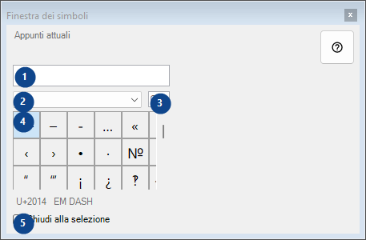
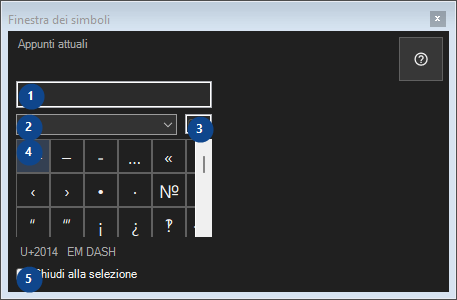

Finestra dei simboli
A cosa serve
Tavolozza di caratteri rari: un clic copia il carattere negli appunti; tutto rimane su questo computer.


Ordine delle operazioni
Leggi le spiegazioni numerate, scegli i valori necessari e continua con il comando della finestra.
Elementi
1. Appunti attuali
Appunti attuali
Le tue scorciatoie2. Insieme di simboli
Insieme di simboli
Le tue scorciatoie3. Cerca simboli
Cerca per nome, parole chiave o codice Unicode
Le tue scorciatoie4. Griglia dei simboli
U+2014 EM DASH
Le tue scorciatoie5. Chiudi alla selezione
Chiudi alla selezione
Le tue scorciatoie